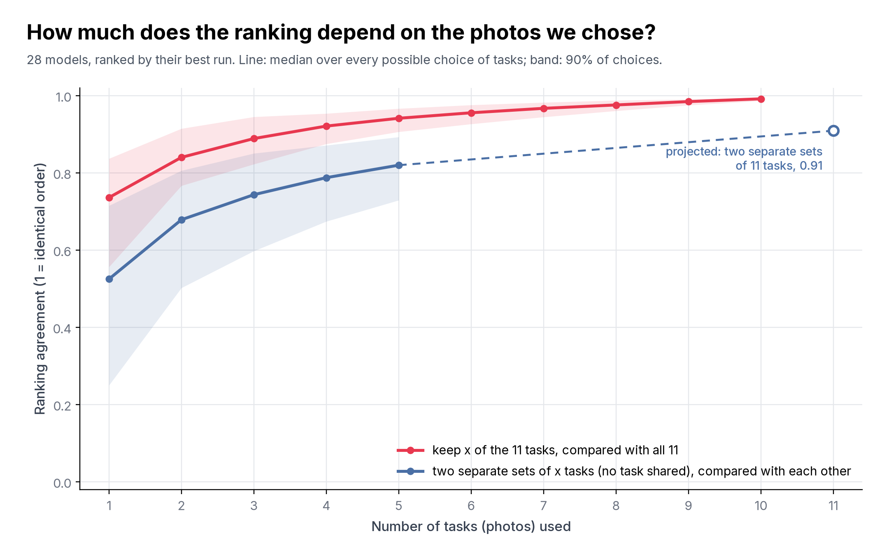
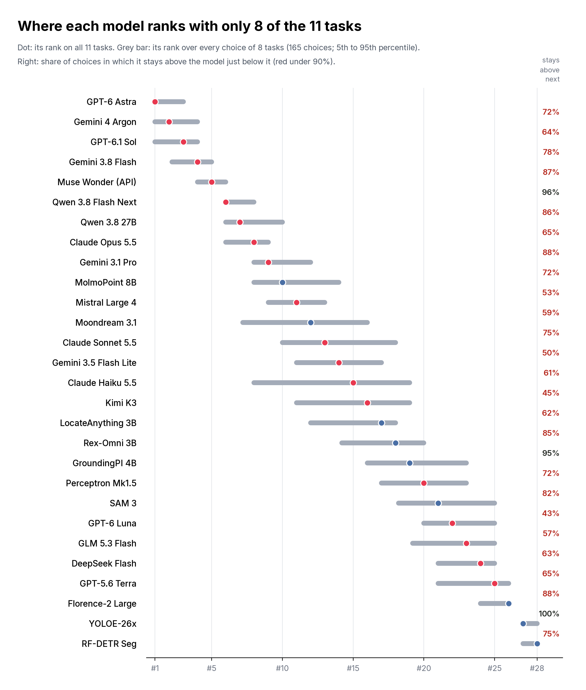

The whole ranking

Red: keep only x of the 11 tasks (every possible choice) and compare the ranking with the one on all 11. Blue: split the tasks into two separate groups of x that share no task, and compare their two rankings. Blue is the fair test of “would other photos give the same ranking”; red looks better partly because the groups share tasks with the full set. The dashed line projects blue to two separate sets of 11 tasks (Spearman-Brown).
Agreement is Spearman's rank correlation: 1 means the same order, 0 means unrelated. 0.91 means the broad order holds, but neighbours often swap.
| Tasks kept | Agreement with all 11 | Same winner | Same top 5 (any order) |
|---|---|---|---|
| 6 | 0.96 | 33% | 72% |
| 8 | 0.98 | 47% | 92% |
| 9 | 0.98 | 56% | 98% |
| 10 | 0.99 | 73% | 100% |
Each model

How it is scored: each model's best run on the tasks kept (re-chosen for each choice of tasks); 28 models. Using the mean of the runs instead gives almost the same ranking (agreement 0.98). Every choice of tasks is counted, none sampled. Each task has its own photo, so leaving out a task also leaves out its photo. Numbers: robustness.json; drawn by uv run scripts/task_robustness.py point-benchmark-v3.